Introduction
Ce rapport accompagne le relevé d'audit effectué sur le site « SNHBM ».
La méthodologie d'audit employée repose sur le référentiel RGAA 4, consultable à l'adresse suivante : https://accessibilite.public.lu/fr/rgaa4/criteres.html
L'audit a été réalisé au moyen de l'utilisation de navigateurs web et d'outils spécialisés. Des tests de restitution ont également été effectués conformément à la base de référence définie par le RGAA 4.
Échantillon
L'audit a porté sur un échantillon de 15 pages pour le niveau double A (AA) :
| Nº page | Titre de la page | URL |
|---|---|---|
| P01 | Accueil | https://snhbm.lu/ |
| P02 | Conditions d'utilisation | https://snhbm.lu/conditions-dutilisation/ |
| P03 | Protection des données | https://snhbm.lu/protection-des-donnees/ |
| P04 | Administration transparente | https://snhbm.lu/administration-transparente/ |
| P05 | À propos | https://snhbm.lu/a-propos/ |
| P06 | Nos conditions | https://snhbm.lu/nos-conditions/ |
| P07 | Vente | https://snhbm.lu/vente/ |
| P08 | Fiche personnelle - Pour acheter | https://snhbm.lu/sites/fiches/inscription/vente/ |
| P09 | Nos projets | https://snhbm.lu/nos-projets/ |
| P10 | Page Projet | https://snhbm.lu/projet/belvaux-geessewee/ |
| P11 | FAQ | https://snhbm.lu/faq/ |
| P12 | Jobs | https://snhbm.lu/jobs/ |
| P13 | Contact | https://snhbm.lu/contact/ |
| P14 | Actualités | https://snhbm.lu/category/news/ |
| P15 | Actualité | https://snhbm.lu/communique-visite-sar-kox-chantier-elmen/ |
Environnement de test (base de référence)
Quelques critères RGAA, notamment ceux de la thématique JavaScript, incluent des tests de restitution à effectuer sur des technologies d'assistance associées à des navigateurs et des systèmes d'exploitation. Pour qu'un dispositif HTML / WAI-ARIA ou son alternative soit considéré comme compatible avec l'accessibilité, il faut qu'il soit pleinement fonctionnel, en termes de restitution et de fonctionnalités sur certaines combinaisons. Vous trouverez une explication détaillée de cet environnement de tests dans le document du RGAA 4.
Nous détaillons ci-dessous la base de référence utilisée pour réaliser les tests de restitution des composants du site.
Environnement de test – ordinateur
| Technologie d'assistance | Navigateur |
|---|---|
| NVDA 2020.4 | Firefox 89.0.2 |
| JAWS 2020 | Internet Explorer 11 |
| VoiceOver | Safari 14 |
Environnement de test — mobile
| Système d'exploitation | Technologie d'assistance | Navigateur |
|---|---|---|
| Android 10 | TalkBack (dernière version) | Chrome 86 |
Accessibilité des pages auditées
Le site présente un niveau général d'accessibilité faible.
Le niveau moyen de conformité relevé atteint 33,33% de conformité sur l'ensemble des pages auditées, avec 30,61% de conformité au niveau simple A (A) et 45,45% de conformité au niveau double A (AA).
Le site est non conforme.
Conformité RGAA 4 du site
| Conforme | Non conforme | |
|---|---|---|
| A | 30,61% | 69,39% |
| AA (légal) | 33,33% | 66,67% |
Note sur le calcul de conformité
La conformité globale (Tableau « Conformité RGAA 4 ») est calculée de la manière suivante : C / (C+NC). C est le nombre de critères conformes et NC le nombre de critères non conformes.
C'est ce nombre qui constitue la référence légale. Il représente le taux de conformité de l'échantillon.
Il est normal que le taux de conformité global diffère sensiblement du taux de conformité par page. En effet, un critère NC (non conforme) sur une page rend le critère non conforme sur l'ensemble de l'échantillon.
Pour qu'un site soit conforme (100 % des critères applicables sont conformes au niveau AA), il est nécessaire que le taux de conformité par page équivaille à 100 %.
Conformité pour chaque niveau
| Conforme | Non conforme | |
|---|---|---|
| A | 30,61% | 69,39% |
| AA | 45,45% | 54,55% |
Moyenne par pages
| Nº page | Titre de la page | %C |
|---|---|---|
| P01 | Accueil | 54,55% |
| P02 | Conditions d'utilisation | 96,00% |
| P03 | Protection des données | 92,00% |
| P04 | Administration transparente | 96,15% |
| P05 | À propos | 92,59% |
| P06 | Nos conditions | 67,74% |
| P07 | Vente | 85,19% |
| P08 | Fiche personnelle - Pour acheter | 41,86% |
| P09 | Nos projets | 82,76% |
| P10 | Page Projet | 82,14% |
| P11 | FAQ | 86,21% |
| P12 | Jobs | 86,21% |
| P13 | Contact | 70,97% |
| P14 | Actualités | 80,77% |
| P15 | Actualité | 91,30% |
Moyenne par thématiques
| Thématiques | C | NC |
|---|---|---|
| Images | 0% | 100% |
| Cadres | 0% | 100% |
| Couleurs | 0% | 100% |
| Multimédia | 20% | 80% |
| Tableaux | 25% | 75% |
| Liens | 50% | 50% |
| Script | 0% | 100% |
| Éléments obligatoires | 50% | 50% |
| Structuration | 50% | 50% |
| Présentation | 50% | 50% |
| Formulaires | 25% | 75% |
| Navigation | 33,33% | 66,67% |
| Consultation | 66,67% | 33,33% |
Impacts utilisateurs
Les principales personnes impactées sont les personnes aveugles, grands malvoyants et déficients visuels, et celles qui naviguent au clavier. Les problèmes liés à la structure des pages, aux contrastes de couleurs, aux scripts et aux formulaires rendent parfois difficile l'utilisation du site par ces utilisateurs.
Contenus dérogés
La dérogation est un moyen d'exclure du champ d'application du référentiel des contenus particuliers. Les cas de dérogations sont très encadrés, vous en trouverez le détail dans le guide des dérogations.
Les contenus suivants n'entrent pas dans le calcul de la conformité ni dans le périmètre des éléments à rendre accessible, ils sont dérogés :
- Page d'Accueil et page "Nos Projets" : le contenu cartographique est exempté. Néanmoins, l'information de localisation doit être fournie sous une autre forme accessible.
- Page "Contact : le contenu cartographique est exempté. L'information est accessible dans le bloc contenant les coordonnées de la SNHBM.
Droit à la compensation
Les dérogations émises notamment pour charge disproportionnée demandent en contrepartie la mise en place d'un moyen de compensation pour les utilisateurs. Pour les documents bureautiques par exemple, vous devez fournir un moyen à l'utilisateur de demander une version accessible d'un document s'il en a besoin. Cela peut être un mail ou un formulaire de contact.
Note sur le relevé des non-conformités
Ne sont cités dans ce rapport que quelques exemples issus du relevé des non-conformités.
De plus, toutes les occurrences d'une non-conformité ne sont pas listées dans le relevé. Par exemple concernant les non-conformités de contrastes de couleurs, le relevé mentionne quelques occurrences, mais ne les cite pas tous.
Avis
Les non-conformités sont nombreuses mais ne devraient pas poser de problèmes majeurs de correction. Parmi elles, les problèmes de contraste et de visibilité de la prise de focus sont particulièrement bloquants.
On constate également un grand nombre de non-conformités sur le formulaire d'inscription et sur les documents PDF en téléchargement qui constituent des contenus d'une importance particulière pour les utilisateurs.
Ce sont donc ces points qui devront nécessiter une attention toute particulière et qui demanderont le plus d'efforts.
Annexe technique
Images
Recommandation
Donner à chaque image porteuse d'information une alternative textuelle pertinente et une description détaillée si nécessaire. Lier les légendes à leurs images. Remplacer les images textes par du texte stylé lorsque c'est possible.
Images de décoration
Le site contient des images de décoration qui ne sont pas correctement identifiées, soit parce qu'elles ont une alternative renseignée, soit parce qu'il manque les attributs nécessaires pour qu'elles soient ignorées par les technologies d'assistance.
Ces images n'apportent aucune information et peuvent causer des problèmes de compréhension pour les aveugles et les grands malvoyants qui vont écouter les contenus avec un lecteur d'écran.
- Dans le cas d'une image insérée avec la balise
img, mettre unalt="". - Dans le cas d'une image insérée avec la balise
svg, mettre une propriété ARIAaria-hidden="true".
Constats sur le site
Sur la page "Fiche personnelle - Pour acheter", les pictogrammes de la fenêtre modale d'enregistrement n'ont pas de propriété aria-hidden="true".
Images porteuses d'information
Il est nécessaire de donner une alternative pertinente dans le cas où la suppression de l'image entraînerait un problème de compréhension des contenus
Constats sur le site
Sur la page "Fiche personnelle - Pour acheter", le logo SNHBM a une alternative non pertinente "Logo SNHBM". Il faut une alternative "SNHBM".
Images porteuses d'information complexe
Certaines images porteuses d'informations sont complexes et nécessitent une description détaillée, pertinente, structurée et adjacente à l'image afin de permettre aux personnes ne percevant pas les images (comme les personnes aveugles), ou ayant des difficultés à les comprendre lorsqu'elles contiennent du texte (personnes ayant des difficultés de lecture, comme les dyslexiques par exemple) d'accéder à l'information.
Il sera possible de masquer cette description et de prévoir un bouton permettant à l'utilisateur de l'afficher si besoin (par exemple : « Afficher la description de l'image »). Voir un exemple de ce mécanisme. Il est également possible de proposer un lien adjacent à l'image vers la description détaillée.
Constats sur le site
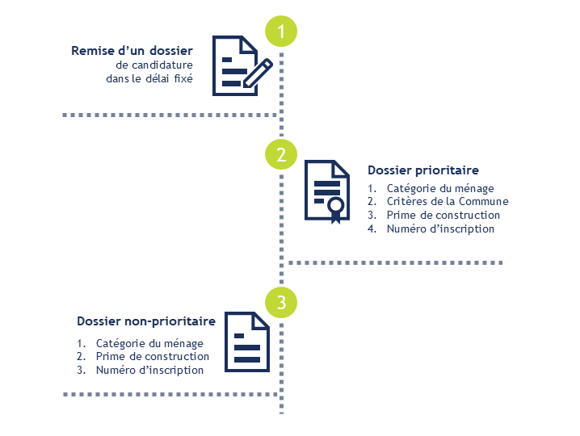Sur la page "Nos conditions", le texte concernant les prochaines étapes à la suite de la séance d’information est intégré dans une image qui ne possède pas de description détaillée.
Images textes
Lorsque des images textes peuvent être reproduites en HTML et CSS, vous ne devez pas utiliser d'images.
Les textes doivent être réalisés en HTML et CSS afin de permettre aux utilisateurs qui en ont besoin d'adapter leur lisibilité (agrandissement des caractères, modification des couleurs, des polices…).
Il est également possible de conserver les images textes et de fournir à l'utilisateur un mécanisme de remplacement qui lui permet, avec un bouton par exemple, de remplacer toutes les images textes en textes stylés.
Constats sur le site
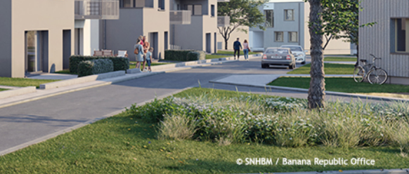Sur la page d'Accueil, le carrousel contient des photos dont les informations de copyright sont intégrées à l'image. Ces informations devraient être reproduites en HTML.
De plus, afin d'associer cette information à son image, il faudra utiliser l'implémentation suivante :
<figure role="group" aria-label="Photo 1 - © SNHBM / Banana Republic Office">
<img src="path/to/img/jpg" alt="Photo 1" />
<figcaption>
Photo 1 — © SNHBM / Banana Republic Office</figcaption>
</figure>Le contenu de l'attribut alt de l'image sert ici à labelliser l'image pour la relier à sa légende, permettant aux personnes aveugles utilisant un lecteur d'écran de faire le lien entre l'image et le texte qui l'accompagne. La propriété aria-label doit reprendre le contenu exact contenu dans l'élément figcaption.
Cadres
L'absence d'identification des cadres peut poser un problème de repérage dans la structure de la page ou de compréhension des contenus pour les personnes aveugles.
Constats sur le site
Sur la page d'Accueil, l'iFrame du lecteur vidéo n'a pas de titre.
Couleurs
Recommandation
Ne pas donner l'information uniquement par la couleur et utiliser des contrastes de couleurs suffisamment élevés pour les textes et les composants d'interface.
Contrastes des textes
Plusieurs couleurs présentent un rapport de contraste insuffisant, ce qui peut poser problème aux grands malvoyants et aux déficients visuels qui ont des difficultés à percevoir les couleurs ou les contrastes.
Rapports de contrastes définis par le RGAA
- Pour les textes qui ont une taille de police calculée inférieure à 24px sans effet de graisse ou une taille de police calculée inférieure à 18,5px avec effet de graisse, le rapport de contraste entre la couleur du texte (y compris le texte en image) et son arrière-plan doit être de 4.5:1, au moins.
- Pour les textes qui ont une taille de police calculée supérieure ou égale à 24px sans effet de graisse ou une taille de police calculée supérieure ou égale à 18,5px avec effet de graisse, le rapport de contraste entre la couleur du texte (y compris le texte en image) et son arrière-plan doit être de 3:1, au moins.
Vous pouvez foncer les couleurs pour obtenir le rapport de contraste exigé.
Si la charte graphique ne peut être modifiée, fournissez une méthode aux utilisateurs pour consulter le site avec des contrastes suffisants. Ceci peut être réalisé simplement avec une fonctionnalité JavaScript et une surcharge CSS des couleurs.
Vous pouvez voir un exemple de ce type de mécanisme sur le site sncf.com. Dans les réglages d'accessibilité, vous trouverez une option qui permet d'afficher le site avec des contrastes renforcés et inversés.
Constats sur le site
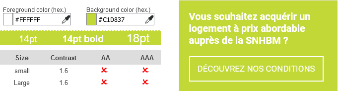De nombreux textes utilisent des combinaisons de couleurs n'offrant pas un rapport de contraste suffisant. Par exemple, la couleur vert clair #C1D837 associée à du blanc #FFFFFF donne un rapport de contraste de 1.6 au lieu de 4.5 minimum.
Contraste des composants d'interface
Les composants d'interface, les illustrations porteuses d'information ou encore les mises en couleurs porteuses d'information doivent être suffisamment contrastés pour être perçus par les utilisateurs ayant des troubles de perception des couleurs. Par exemple, une icône porteuse d'information devra avoir un rapport de contraste avec la couleur de fond de 3. De même, pour un champ de saisie de formulaire, dont la zone active est matérialisée par sa bordure, alors la couleur de cette bordure devra avoir un rapport de contraste de 3 avec la couleur de fond de la page.
Constats sur le site
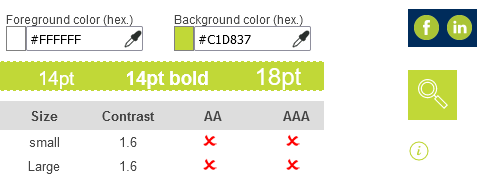Les composants d'interface ci-dessous utilisent également la même combinaison de couleurs que les textes (vert clair #C1D837 et blanc #FFFFFF), ce qui donne un rapport de contraste insuffisant de 1.6 au lieu de 3 minimum :
- Les liens vers les réseaux sociaux dans le pied de page
- Le bouton du champ de recherche de projet sur la page d'Accueil
- Les pictogrammes d'information sur la page "Fiche personnelle - Pour acheter"
Information par la couleur
Lorsqu'une information est donnée par la couleur, il faut qu'elle soit également véhiculée par une autre méthode, par exemple par un texte qui donne la même information, pour être perçue par les utilisateurs aveugles.
Il faut également donner un indice visuel autre que la couleur, afin de répondre aux besoins des personnes déficientes visuelles (les daltoniens par exemple). Il peut s'agir d'un symbole, d'une texture, de chiffres.
Constats sur le site
Dans le menu de navigation, la page active n'est indiquée que par la couleur.
Multimédia
Recommandation
Donner si nécessaire à chaque média temporel une transcription textuelle, des sous-titres synchronisés et une audiodescription synchronisée pertinents. Donner à chaque média non temporel une alternative textuelle pertinente. Rendre possible le contrôle de la consultation de chaque média temporel et non temporel au clavier et s'assurer de leur compatibilité avec les technologies d'assistance.
Identifier les vidéos
Il est nécessaire d'identifier la vidéo et permettre ainsi aux utilisateurs de comprendre quelle est l'information présentée dans ce contenu.
Vous disposez de deux méthodes pour le faire :
- soit faire précéder la vidéo par un titre (solution recommandée) ;
- soit faire suivre la vidéo d'une phrase de légende (paragraphe).
Transcription textuelle
Les vidéos présentes sur le site ne disposent pas de transcription textuelle. Il s'agit d'un impact majeur d'accessibilité. En effet, la transcription textuelle est utile pour différents types d'utilisateurs (aveugles, malvoyants, sourds, malentendants, handicapés moteurs, handicapés cognitifs).
Cette transcription doit être un fichier structuré (docx, HTML) qui reprend toutes les informations présentes (visuelles et sonores) dans la vidéo.
Cette transcription peut être située :
- soit sur la même page que la vidéo ;
- soit ailleurs sur le site. Dans ce cas, ajouter alors un lien vers la transcription sous la vidéo par exemple.
Sous-titres
Chaque vidéo doit disposer de sous-titres synchronisés pertinents, pour permettre aux utilisateurs sourds ou malentendants d'accéder au contenu oralisé de la vidéo.
L'utilisateur doit pouvoir activer ou désactiver les sous-titres depuis le lecteur vidéo. Si ce n'est pas possible, une solution consiste à fournir deux versions de la même vidéo : une version sans sous-titres et une version sous-titrée (On fera ensuite un lien réciproque de l'une vers l'autre).
Constats sur le site
Sur la page d'Accueil, la vidéo "Comment devenir propriétaire à prix abordable" n'a pas de transcription textuelle ni de sous-titres et n'est pas introduite par un titre permettant de l'identifier.
Contrôles
Le lecteur vidéo utilisé doit lui aussi être accessible :
- il doit être utilisable au clavier et à la souris ;
- il doit proposer les contrôles essentiels (lecture/pause, contrôle du volume, activation/désactivation des sous-titres, etc.) ;
- il doit être compatible avec les API d'accessibilité ;
- ses boutons et composants d'interface porteurs d'information doivent être suffisamment contrastés (rapport de contraste de 3:1 avec la couleur d'arrière-plan contiguë).
Constats sur le site
Sur la page d'Accueil, les contrôles de la vidéo "Comment devenir propriétaire à prix abordable" ne sont pas compatibles avec les technologies d'assistance (notamment impossibilité de contrôler le volume sonore, et problème pour accéder aux options de paramétrages supplémentaires).
Tableaux
Recommandation :
Donner un résumé à chaque tableau de données complexe, s'assurer que pour chaque tableau de données ayant un titre, ce titre est pertinent, identifier clairement les cellules d'en-tête, utiliser un mécanisme pertinent pour lier les cellules de données aux cellules d'en-tête. Pour chaque tableau de mise en forme, veiller à sa bonne linéarisation.
Tableaux de mise en forme
La restitution des tableaux peut poser problème pour les personnes aveugles, car les technologies d'assistance tentent d'optimiser la navigation dans les tableaux, en modifiant par exemple le comportement des flèches de direction pour circuler plus facilement entre les cellules.
Dans un tableau de données, cela est utile et correspond au format de données tabulaires, mais dans un tableau de mise en forme, ce comportement est problématique et peut venir perturber le parcours des informations.
L'API ARIA propose une propriété (role="presentation") qui permet d'annuler la sémantique des éléments restitués.
Constats sur le site
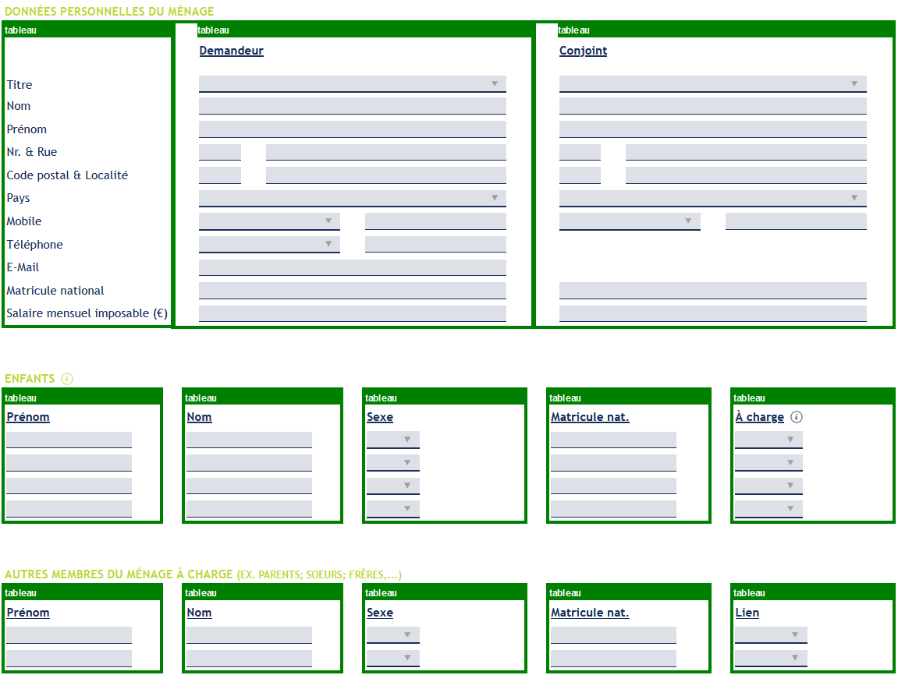Sur la page "Fiche personnelle - Pour acheter", les formulaires sont mis en forme au moyen de tableaux qui ne permettent pas de consulter le contenu dans un ordre logique. De plus, les tableaux ne possèdent pas de propriété role="presentation".
Tableaux de données
Un tableau de données doit répondre à certains enjeux pour être exploité correctement par les lecteurs d'écrans. Les enjeux sont les suivants :
- Le tableau doit posséder un titre permettant de l'identifier (
<caption>) ; - Les en-têtes doivent être identifiés (balises
<th>) et doivent pouvoir être restitués lorsque l'utilisateur parcourt chaque cellule à l'aide de son lecteur d'écran (attributsscopesi nécessaire).
Constats sur le site
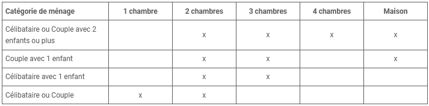Dans la page "Nos conditions", le tableau "critère de la composition du ménage" n'utilise pas d'éléments <th scope="row"> pour les cellules d'en-têtes de lignes. De plus, les cellules d'en-têtes de colonnes n'ont pas de propriété scope="col".
Liens
Recommandation :
Donner des intitulés de lien explicites, grâce à des informations de contexte notamment, utiliser le titre de lien le moins possible. S'assurer que le nom visible est contenu dans le nom accessible.
Présence d'intitulés
Un lien doit toujours posséder un intitulé permettant à l'utilisateur de comprendre sa destination. Les liens contenant uniquement des objets graphiques (images, icônes, etc.) posent souvent problème pour les personnes aveugles.
Pour ces liens, la technique pour fournir un intitulé dépend des cas :
- Si ces liens-images sont construits avec des balises images (
<img />), renseignez l'alternative de l'image (par exemple :<a href="https://twitter.com/example"><img src="path/to/img/png"alt="Suivez-nous sur Twitter" /></a>) - Si ces liens-images sont construits avec des balises SVG (
<svg>), alors ajoutez sur cette baliserole="img"pour indiquer aux lecteurs d'écrans qu'il s'agit bien d'une image et un intitulé pararia-label="Suivez-nous sur Twitter".
Constats sur le site
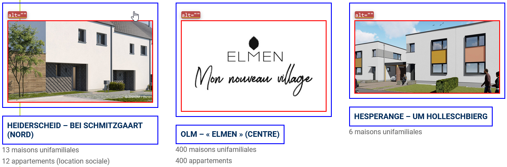Sur la page d'Accueil, les projets en cours de vente se présentent sous forme de blocs contenant un lien image et un lien texte. Les liens-images ne possèdent pas d'intitulé (attribut alt vide).
Scripts
Recommandation :
Donner si nécessaire à chaque script une alternative pertinente. Rendre possible le contrôle de chaque code script au moins par le clavier et la souris et s'assurer de leur compatibilité avec les technologies d'assistance. Identifier les messages de statut lorsque c'est nécessaire.
Utilisation des boutons et des liens
Pour les aveugles et les grands malvoyants qui utilisent un lecteur d'écran, ce manque de distinction claire entre les liens et les boutons peut poser de graves problèmes.
Ainsi, un bouton implémenté sous la forme d'un lien qui déclenche une action de la page, risque de perturber l'utilisateur qui s'attendra au chargement d'une nouvelle page.
De manière générale, les liens devraient être réservés à l'affichage d'une nouvelle page ou la création de liens d'accès rapide dans le contenu. Dans tous les autres cas, l'emploi d'un bouton d'action est plus pertinent.
Enfin, chaque bouton doit avoir un nom accessible défini, soit par l'intermédiaire d'un texte (visible ou positionné hors écran) ou d'une propriété title, aria-label ou aria-labelledby.
Constats sur le site
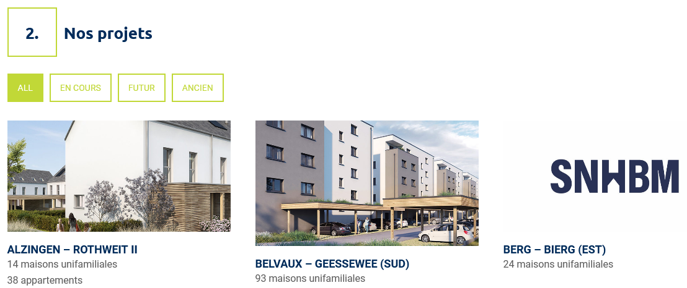Sur la page "Nos Projets", les filtres déclenchent une action JavaScript mais utilisent des éléments <a>.
Utilisation inappropriée de propriétés ARIA
Les propriétés ARIA sont chargées de transmettre des informations indispensables à la restitution et l'utilisation des composants développés avec JavaScript aux technologies d'assistance. Une utilisation inappropriée peut poser des problèmes de restitution notamment.
Constats sur le site
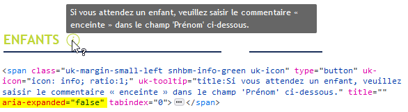Sur la page "Fiche personnelle - Pour acheter", les éléments qui déclenchent des tooltips utilisent la propriété aria-expanded de manière inappropriée.
Éléments interactifs inaccessibles au clavier
Si un élément ne peut pas recevoir le focus ou n'est pas totalement utilisable au clavier, les utilisateurs pour lesquels le clavier est le seul moyen de naviguer seront bloqués.
Constats sur le site
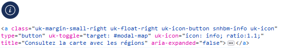Sur la page "Fiche personnelle - Pour acheter", le bouton permettant d'ouvrir la fenêtre modale de localisation utilise un élément <a> sans attribut href au lieu d'utiliser un <button> et n'est donc pas atteignable au clavier.
Fenêtres modales
Constats sur le site
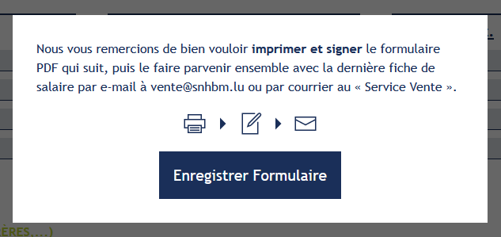La page "Fiche personnelle - Pour acheter" contient des fenêtres modales qui n'implémentent pas le motif de conception ARIA "Dialog".
Gestion de la visibilité de zones
Le site possède des fonctionnalités d'affichage ou de masquage des zones de contenus. L'état affiché/masqué du contenu additionnel doit pouvoir être disponible pour les technologies d'assistance afin que les utilisateurs aveugles accèdent à cet état.
Pour ce type d’élément, l’implémentation du motif ARIA Disclosure est recommandée.
Constats sur le site
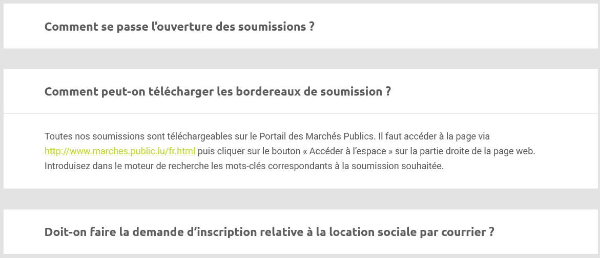Sur la page FAQ, les offres sont présentées sous forme d'accordéons mais n'implémentent pas le motif de conception ARIA "Disclosure".
Éléments obligatoires
Recommandation
Vérifier que chaque page web a un code valide selon le type de document, un titre pertinent et une indication de langue par défaut. Vérifier que les balises ne sont pas utilisées uniquement à des fins de présentation, que les changements de langues et de direction de sens de lecture sont indiqués.
Indication de langue
Les lecteurs d'écrans utilisent les indications de langue pour vocaliser le contenu dans la langue définie. La page doit contenir une définition de langue principale (généralement sur l'élément html).
Ensuite, les éléments de langue étrangère présentS dans le contenu doivent être signalés. Si on trouve dans la page des termes absents du dictionnaire de la langue principale de la page, il faut les identifier afin que le lecteur d'écran les restitue dans la langue appropriée. En effet, une mauvaise prononciation pourrait mener à des incompréhensions pour les utilisateurs qui reposent uniquement sur des restitutions orales. Les noms propres sont exclus de cette obligation.
Constats sur le site
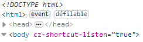Il n'existe aucune indication de langue sur la page "Fiche personnelle - Pour acheter".
Validité du code
Les technologies d'assistance, comme les lecteurs d'écrans ou les systèmes de contrôle à la voix, s'appuient sur le code des pages pour générer les restitutions et les interactions avec l'utilisateur. Un lecteur d'écran va exploiter le code HTML fourni par le navigateur et les informations accessibles au moyen des API d'accessibilité du système.
Si le code comporte des erreurs (balises mal fermées par exemple), il y a un risque que les fonctionnalités du lecteur d'écran soient impactées, comme la navigation de lien en lien par exemple.
Pour vérifier la conformité d'une page, vous pouvez utiliser le validateur mis à disposition par le W3C.
Constats sur le site
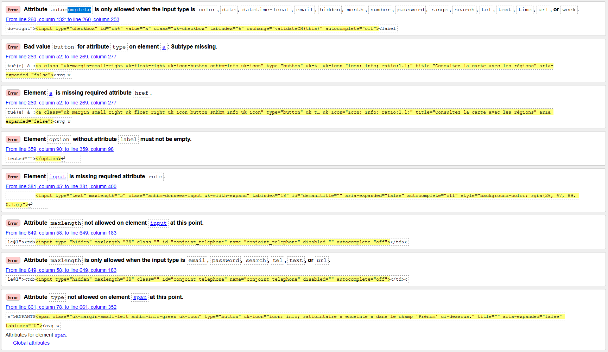Les erreurs suivantes sont remontées sur la page "Fiche personnelle - Pour acheter" :
- Attribute
autocompleteis only allowed when the input type is "color", "date", "datetime-local", "email", "hidden", "month", "number", "password", "range", "search", "tel", "text", "time", "url", or "week". - Bad value
buttonfor attribute "type" on elementa: Subtype missing. - Element
ais missing required attribute "href". - Element
optionwithout attribute "label" must not be empty. - Element
inputis missing required attribute "role". - Attribute "maxlength" not allowed on element
inputat this point. - Attribute "maxlength" is only allowed when the
inputtype is "email", "password", "search", "tel", "text", or "url". - Attribute "type" not allowed on element
spanat this point.
Balises utilisées à des fins de présentation
Les éléments de structure HTML ont chacun une sémantique particulière (paragraphe, titre, image, lien, etc.). Si les éléments sont mal employés (détournés de leur utilité première), cela peut poser des problèmes aux utilisateurs qui naviguent à l'aide d'une technologie d'assistance (lecteur d'écran, plug-in…). En effet, les technologies d'assistance disposent de raccourcis permettant de naviguer rapidement entre certains types d'éléments (paragraphes, titres, listes, etc.). Si ces éléments sont mal employés, les utilisateurs ne peuvent pas utiliser ces fonctionnalités de repère et de navigation dans le contenu.
Constats sur le site
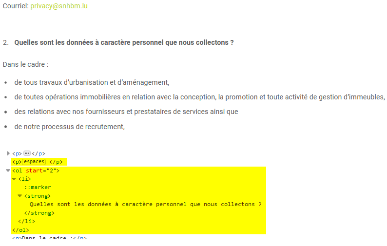Sur la page "Protection des données", des éléments <p> vides sont utilisés pour créer des espaces, et des éléments de liste <ol> sont utilisés sur des éléments de titrage.
Structuration de l'information
Recommandation
Utiliser des titres, des listes, des abréviations et des citations pour structurer l'information. S'assurer que la structure du document est cohérente.
Titres
Le titrage des contenus est une étape importante dans la structuration des contenus. Cela répond à deux besoins :
- identifier rapidement un contenu recherché ;
- naviguer rapidement dans le contenu en se déplaçant de titre en titre.
Un titrage correct fournit à l'utilisateur de lecteur d'écran un plan du document et lui permet de naviguer de titre en titre pour se déplacer plus rapidement dans le contenu de la page.
Pour valider la structure de votre page, vous pouvez utiliser l'extension Firefox HeadingsMap. Lorsque l'extension est active, sélectionnez l'onglet « Headings » et vérifiez la cohérence et l'imbrication des titres.
Constats sur le site
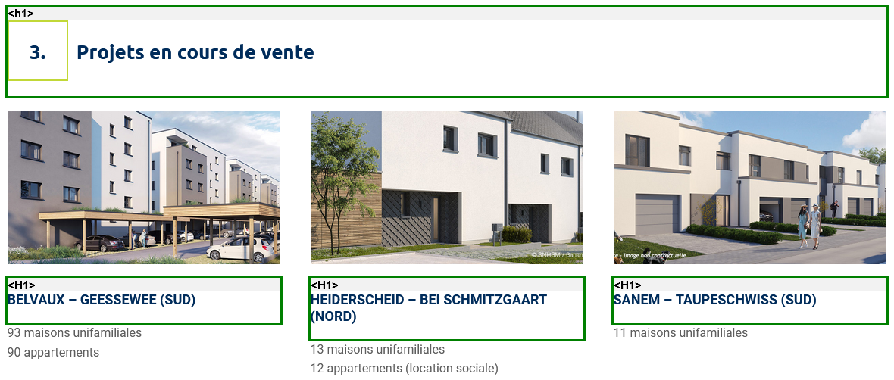Sur la page d'Accueil, les titres des projets en cours de vente sont de même niveau (<h1>) que le titre de la section qui les contient.
Structure du document
L'utilisation correcte des balises HTML5 et des landmarks ARIA va permettre d'enrichir la restitution pour les utilisateurs aveugles qui ne perçoivent pas les mises en forme : la navigation principale ne sera plus perçue simplement comme une liste de liens, elle sera restituée à l'utilisateur comme un élément de navigation, par l'intermédiaire du lecteur d'écran qui annoncera « région » ou « repère ».
De plus, ces marqueurs sémantiques vont également constituer des éléments de navigation rapide dans la page. Grâce à un raccourci clavier, certains utilisateurs vont pouvoir naviguer plus rapidement entre les régions qui auront été ainsi identifiées.
Constats sur le site
Il n'existe aucun élément de structure HTML5 sur la page "Fiche personnelle - Pour acheter".
Présentation de l'information
Recommandation
Utiliser des feuilles de styles pour contrôler la présentation de l'information. Vérifier l'effet de l'agrandissement des tailles des caractères sur la lisibilité. S'assurer que les liens sont correctement identifiables, que la prise de focus est signalée, que l'interlignage est suffisant et donner la possibilité à l'utilisateur de contrôler la justification des textes. S'assurer que les textes cachés sont correctement restitués et que l'information n'est pas donnée uniquement par la forme ou la position d'un élément. S'assurer que les contenus sont lisibles et utilisables dans une fenêtre de largeur réduite. Veiller à ce que l'application de paramètres typographiques n'entraîne pas la perte de contenu ou de fonctionnalité. S'assurer que les contenus qui apparaissent au survol et à la prise de focus puissent être contrôlés par l'utilisateur.
Utilisation de CSS exclusivement
Certains utilisateurs qui présentent des troubles de la lecture (personnes dyslexiques par exemple), vont avoir besoin d'adapter la présentation des pages avec leurs propres mises en forme. Cela est possible sans difficulté si le site web utilise exclusivement les feuilles de styles CSS pour réaliser les mises en forme. Cependant, l'utilisation d'attributs et balises HTML de mise en forme rend ces adaptations plus compliquées, sinon impossibles.
Le RGAA donne la liste des attributs et balises qu'il est interdit d'utiliser.
Constats sur le site
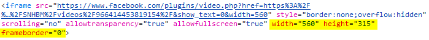Sur la page d'Accueil, les iframes contenant les vidéos utilisent des attributs HTML width, height et frameborder.
Contenu compréhensible sans les styles : ordre visible vs ordre réel
Un utilisateur aveugle n'a pas accès à la mise en forme qui parfois est porteuse d'informations importantes, notamment des relations entre les éléments.
Il est important de ne pas implémenter les textes dans l'ordre visuel, mais bien dans l'ordre logique de dépendance et hiérarchie des éléments.
Le contenu doit rester compréhensible sans les feuilles de styles (vous pouvez tester vos contenus en désactivant les feuilles de styles).
Constats sur le site
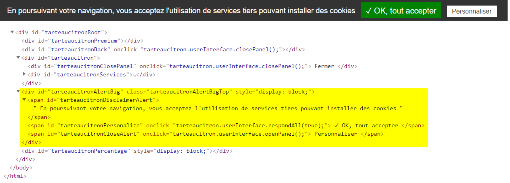Lors de la première visite sur le site, un bandeau d'acceptation des cookies apparaît en haut de page. Ce bandeau se trouve en fin de page dans le code source.
Visibilité de la prise de focus
Les personnes avec un handicap moteur qui naviguent au clavier peuvent rencontrer des difficultés considérables à utiliser du contenu si elles ne sont pas en mesure de repérer l'indication visuelle du focus et ses déplacements.
Constats sur le site
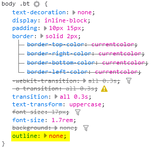Les liens encadrés verts sur blanc ou blanc sur vert annulent l'outline du navigateur sans redéfinir de style visible pour la prise de focus.
Largeur réduite
Il s'agit ici de tester la capacité des contenus à se réorganiser lorsqu'un utilisateur malvoyant doit réaliser un zoom graphique de 400%. À ce titre, on teste la lisibilité des contenus dans une fenêtre de largeur réduite à 320px.
On s'assure que l'utilisateur a accès à tous les contenus et que tous les contenus sont lisibles sans avoir recours à la barre de défilement horizontale.
Constats sur le site
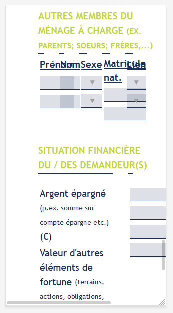Dans une fenêtre de 320px de large, les contenus de la page "Fiche personnelle - Pour acheter" ne peuvent être consultés sans défilement horizontal, et certains contenus se chevauchent.
Contenus additionnels au survol et au focus
Les contenus additionnels qui apparaissent au survol ou à la prise de focus (par exemple, un menu déroulant, une infobulle d'information), peuvent être contrôlés par l'utilisateur. Par exemple, les utilisateurs malvoyants utilisateurs de loupes d'écrans peuvent déclencher l'affichage accidentel des contenus qui apparaissent au survol et ces affichages non désirés perturbent la consultation pour ces utilisateurs. L'utilisateur doit alors disposer d'un moyen simple pour les masquer et continuer sa consultation.
Également, en utilisant une loupe d'écran, il est probable que le contenu additionnel soit en fait apparu en dehors de la zone de zoom de la loupe, l'utilisateur doit pouvoir survoler le contenu additionnel à la souris.
Constats sur le site
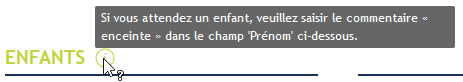La page "Fiche personnelle - Pour acheter" contient des tooltips qui apparaissent au survol d'éléments et ne peuvent ni être survolées ni être masquées avec la touche Escape.
Formulaires
Recommandation :
Associer pour chaque formulaire chacun de ses champs à son étiquette, grouper les champs dans des blocs d'informations de même nature, regrouper les items de même nature dans les listes de choix, donner à chaque bouton un intitulé explicite. Vérifier la présence d'aide à la saisie, s'assurer que le contrôle de saisie est accessible et que l'utilisateur peut contrôler les données à caractère financier, juridique ou personnel.
Étiquettes et champs
Les champs de formulaires doivent tous posséder des étiquettes correctement reliées.
Une étiquette de champ est un texte situé à proximité du champ de formulaire qui permet de connaître la nature, le type ou le format des informations attendues.
De cette manière, lorsqu'un utilisateur entre dans le champ de saisie avec un lecteur d'écran, le lecteur d'écran lit le contenu de l'étiquette. L'utilisateur comprend alors ce qu'il doit saisir.
Sans cela, même si une étiquette est présente visuellement, l'utilisateur entendra « champ de saisie vide » en entrant dans le champ et ne saura donc pas quoi saisir.
Constats sur le site
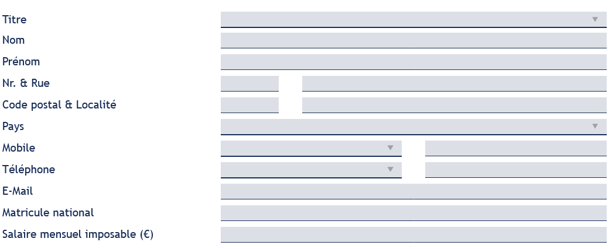Sur la page "Fiche personnelle - Pour acheter", tous les champs à l'exception des cases à cocher sont dépourvus d'étiquettes correctement liées.
Étiquettes et champs accolés
Le RGAA 4 exige que chaque étiquette et le champ qu'elle contrôle soient accolés. En effet, si l'étiquette et son champ sont trop éloignés, les utilisateurs malvoyants qui utilisent une loupe d'écran peuvent échouer à faire correspondre l'étiquette et son champ, et donc ne pas saisir les données attendues dans les bons champs.
Constats sur le site
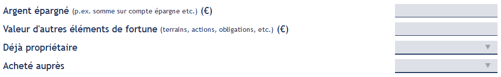Sur la page "Fiche personnelle - Pour acheter", plusieurs champs ne sont pas accolés à leur étiquette, notamment les champs du groupe "SITUATION FINANCIÈRE DU / DES DEMANDEUR(S)".
Intitulés de bouton pertinents
Les boutons qui permettent d'interagir avec les formulaires doivent avoir des intitulés pertinents pour que l'utilisateur comprenne l'action du bouton.
Ces intitulés sont essentiels pour les personnes aveugles, afin qu'elles soient sûres de l'action qu'elles s'apprêtent à réaliser.
Constats sur le site
Sur la page d'Accueil, le bouton de recherche dans la zone "Trouver un projet" n'a pas d'intitulé.
Contrôle de saisie et aide à la saisie
Tous les champs obligatoires doivent être identifiés préalablement à toute validation de l’utilisateur.
Pour les champs qui attendent un format de saisie particulier pour être validés, ce format doit être spécifié à l’utilisateur par un passage de texte visible à proximité du champ. De plus, si l’utilisateur commet une erreur sur ce champ, alors le message d’erreur doit présenter un exemple réel de saisie.
Enfin, les messages d'erreur de saisie des champs de formulaire doivent être liés correctement aux champs en erreur.
Constats sur le site
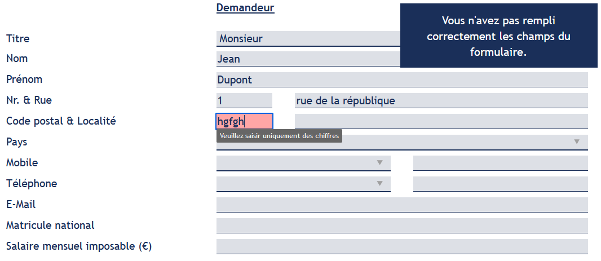Dans le formulaire de la page "Fiche personnelle - Pour acheter", les aides à la saisie ne sont pas ou pas correctement implémentées :
- Les champs obligatoires ne sont pas indiqués de manière visible et préalablement à la validation du formulaire ;
- Le champ "E-mail" attend un format spécifique qui n'est pas indiqué dans l'étiquette ;
- Certains champs proposent des aides à la saisie sous forme de tooltips, mais celles-ci ne sont pas compatibles avec les technologies d'assistance ;
- Il n'est fait aucun usage de messages d'erreurs permettant d'identifier les champs comportant des erreurs de saisie.
Regroupements de champs et légendes
Les regroupements de champs sont utiles pour ne pas induire certains utilisateurs en erreur, notamment les personnes aveugles.
Les cas typiques de regroupements nécessaires sont les groupes de cases à cocher ou de boutons radio
Il est nécessaire d'implémenter les champs dans un regroupement lorsque c'est nécessaire et il est obligatoire de définir une légende à ce regroupement.
Constats sur le site
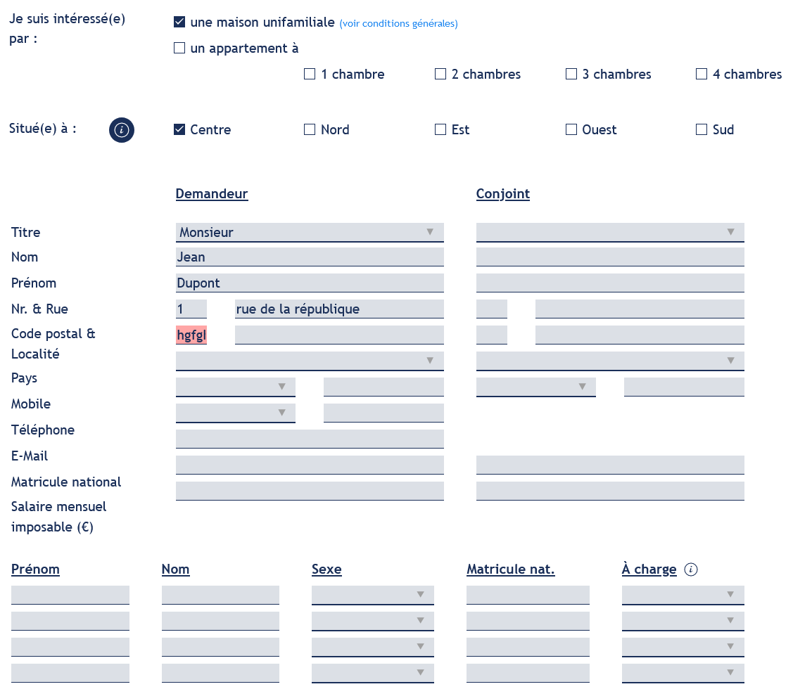Le formulaire de la page "Fiche personnelle - Pour acheter" contient plusieurs ensembles de champs de même nature qui ne sont pas regroupés au moyen de <fieldset> et ne disposent pas non plus de <legend> :
- groupes de cases à cocher
- groupes de champs "Demandeur" et "Conjoint"
- groupes de champs "Enfant" et "Autre membre du ménage à charge"
Identification des données attendues
Certains utilisateurs qui ont des troubles d'accès au langage verbal (paralysie cérébrale, aphasie par exemple) auront des difficultés à accéder au sens des termes écrits. Ainsi, pour leur permettre de remplacer les étiquettes présentes dans les formulaires par des étiquettes (verbales ou imagées) qu'ils connaissent, il est nécessaire d'identifier les champs avec un attribut particulier, de sorte qu'une technologie d'assistance pourra réaliser la personnalisation du formulaire nécessaire à l'utilisateur.
L'identification de ces champs permet également aux utilisateurs d'employer des outils pour remplir automatiquement les champs identifiés avec des valeurs de l'utilisateur.
On ne va rechercher que les champs qui attendent une donnée personnelle. Le RGAA demande d'utiliser l'attribut autocomplete et il fournit l'ensemble des valeurs possibles pour l'attribut.
Constats sur le site
Dans le formulaire de la page "Fiche personnelle - Pour acheter", le groupe de champs "DONNÉES PERSONNELLES DU MÉNAGE - Demandeur" contient des champs qui recueillent les données personnelles de l'utilisateur mais n'utilisent pas l'attribut autocomplete avec les valeurs adéquates.
Navigation
Recommandation :
Faciliter la navigation dans un ensemble de pages par au moins deux systèmes de navigation différents (menu de navigation, plan du site ou moteur de recherche), un fil d'Ariane et l'indication de la page active dans le menu de navigation. Identifier les groupes de liens importants et la zone de contenu et donner la possibilité de les éviter par des liens de navigation interne. S'assurer que l'ordre de tabulation est cohérent et que la page ne comporte pas de piège au clavier. S'assurer que les raccourcis clavier qui utilisent une seule touche sont contrôlables par l'utilisateur.
Systèmes de navigation
Le RGAA demande qu'un site propose au moins deux systèmes de navigations différents. Prévoir deux systèmes de navigation au moins est important, car :
- tous les utilisateurs ne naviguent pas de la même manière ;
- certains systèmes de navigation peuvent s'avérer trop complexes à utiliser, en particulier pour les personnes qui ont recours à des technologies d'assistance. Par exemple, un menu de navigation trop riche, comme un méga-menu, peut nécessiter beaucoup d'actions pour un utilisateur qui navigue exclusivement au clavier, et donc rendre sa recherche d'information très laborieuse.
Par systèmes de navigation, on entend tout procédé permettant une navigation dans le site ou dans une page, parmi :
- un menu de navigation principal ;
- un plan du site ;
- un moteur de recherche.
Note : un moteur de recherche est considéré comme un moyen de navigation s'il indexe toutes les pages du site (y compris les pages de type « Mentions légales » ou « Politique de confidentialité »), et non pas seulement un choix limité (par exemple, seulement les offres tarifaires).
Le plan du site, s’il est présent, doit être représentatif de l’arborescence du site et ne proposer que des liens fonctionnels.
Constats sur le site
Le site ne dispose que d'un système de navigation (menu de navigation principal).
Liens d'accès rapide
On note l'absence d'un lien d'accès rapide au contenu au moins. Les liens d'accès rapides sont utiles aux utilisateurs qui naviguent au clavier, mais aussi aux utilisateurs malvoyants qui utilisent une loupe d'écran afin de sauter rapidement les éléments redondants, comme la navigation.
Pour cela, il est préférable que ces liens soient toujours visibles à l'écran. Malgré cela, ces liens peuvent être positionnés hors écran, mais doivent au moins être rendus visibles à la prise de focus.
Il est donc nécessaire d'implémenter au moins un lien d'accès rapide au contenu, qui permet de sauter toute la navigation principale.
Constats sur le site
Le site ne dispose pas d'un lien d'accès rapide au contenu principal.
Landmarks ARIA
Pour fournir des points de repère aux utilisateurs aveugles, il faudra également implémenter les landmarks ARIA sur les balises HTML 5 de la page.
Constats sur le site
Le site ne dispose d'aucun landmark.
Ordre de tabulation
La navigation dans les contenus peut être considérablement compliquée pour les personnes aveugles ou les personnes handicapées motrices qui naviguent au clavier si l'ordre de tabulation n'est pas cohérent.
L'ordre de tabulation est déterminé par l'ordre des éléments dans le code HTML. Il ne suit pas forcément l'ordre de lecture de la page ou de l'écran, mais il doit être cohérent en fonction de la nature des contenus et des fonctionnalités.
Constats sur le site
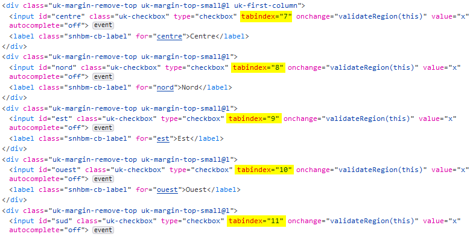Dans le formulaire de la page "Fiche personnelle - Pour acheter", l'ordre de tabulation est rendu incohérent par l'utilisation inappropriée d'attributs tabindex.
Consultation
Recommandation
Vérifier que l'utilisateur a le contrôle des procédés de rafraîchissement, des changements brusques de luminosité, des ouvertures de nouvelles fenêtres et des contenus en mouvement ou clignotants. Ne pas faire dépendre l'accomplissement d'une tâche d'une limite de temps sauf si elle est essentielle et s'assurer que les données saisies sont récupérées après une interruption de session authentifiée. Proposer des versions accessibles ou rendre accessibles les documents en téléchargement. S'assurer que la consultation n'est pas dépendante de l'orientation de l'écran. Toujours proposer un geste simple en alternative d'un geste complexe permettant de réaliser une action.
Documents en téléchargement
Assurez-vous que chaque document soit accessible (cf. les Guides de créations de documents bureautiques accessibles), ou qu'il dispose d'une alternative accessible proposant le même contenu (par exemple, une version HTML correctement structurée).
Constats sur le site
Des documents PDF en téléchargement ne sont pas accessibles, notamment :
- Le document "Statuts" sur la page "Administration transparente"
- Le document "Rapport annuel de 2020" sur la page "À propos"
- Le document "critère de sélection" sur la page "Nos conditions"